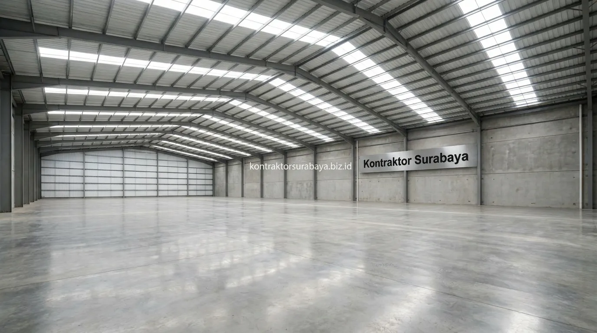

Kebutuhan ruang pergudangan modern dan pabrik logistik bentang lebar tanpa tiang tengah (column-free space) semakin mendesak di kawasan industri strategis Surabaya, seperti Margomulyo, Romokalisari, Osowilangun, SIER Rungkut, hingga Tambak Sawah Sidoarjo. Penerapan konstruksi baja berat Wide Flange (WF) menjadi standar emas industri karena menawarkan kekuatan tarik-tekan superior, kecepatan waktu pembangunan yang luar biasa, serta fleksibilitas tata letak rak racking dan manuver kendaraan berat.
1. Mengapa Baja WF Dipilih untuk Struktur Gudang Bentang Lebar
Baja WF memiliki bentuk profil huruf H dengan sayap lebar yang membuatnya mampu menahan beban lentur secara efisien dibanding profil baja konvensional lain pada bentang yang sama.
Karakteristik modulus penampang yang tinggi pada baja WF menjadikannya pilihan utama untuk kolom utama (main column) dan balok kuda-kuda (rafter) pada gudang dengan bentang 18 hingga 40 meter. Efisiensi bentang ini memungkinkan pemanfaatan volume kubikasi gudang secara 100% tanpa ada tiang tengah yang mengorbankan jalur lalu lintas forklift.
2. Keunggulan Struktur Tanpa Tiang Tengah untuk Operasional Gudang
Struktur bentang lebar tanpa tiang tengah memberikan sejumlah keuntungan operasional yang sulit dicapai dengan struktur beton konvensional pada bentang serupa:
- Alur Logistik Bebas Hambatan: Truk kontainer, trailer fuso, dan forklift dapat berputar balik dan bermanuver tanpa risiko menabrak kolom tengah.
- Efisiensi Racking Pallet Maksimal: Penataan rak penyimpanan vertikal (drive-in racking) dapat dipasang rapat secara modular.
- Kecepatan Fabrikasi & Ereksi: Sistem sambungan baut baja (high-strength bolts) membuat perakitan struktur di lapangan selesai dalam hitungan minggu.
- Beban Mati Struktur Lebih Ringan: Mengurangi beban transfer ke pondasi tanah dibandingkan balok dak beton masif.

3. Pertimbangan Pondasi Gudang di Kawasan Margomulyo
Kawasan Margomulyo dikenal sebagai area industri dengan karakter tanah yang perlu diperhitungkan secara khusus, mengingat sebagian lokasinya berdekatan dengan area rawa dan bekas tambak pesisir Surabaya Barat.
Pondasi untuk gudang berstruktur baja di kawasan ini mutlak memerlukan penyelidikan tanah (soil test / sondir & boring) terlebih dahulu. Lapisan tanah keras di Margomulyo umumnya berada di kedalaman 16 hingga 28 meter, sehingga penggunaan pondasi tiang pancang (spun pile / mini pile) atau bore pile menjadi keharusan untuk mencegah penurunan lantai gudang (differential settlement) akibat beban muatan barang yang sangat masif.
4. Bagaimana Menentukan Profil Baja WF yang Sesuai untuk Gudang?
Pemilihan profil baja WF disesuaikan dengan bentang, tinggi kolom, serta beban atap, beban angin pesisir, dan beban derek hoist crane yang direncanakan:
- Bentang 15 - 20 Meter: Umumnya menggunakan kombinasi profil WF 200x100 hingga WF 250x125.
- Bentang 24 - 30 Meter: Menggunakan profil WF 300x150 hingga WF 400x200 dengan sambungan haunch portal frame.
- Bentang > 30 Meter: Memerlukan profil WF 450x200 ke atas atau sistem rafter taper berkekuatan tinggi.
- Gording Atap: Menggunakan profil CNP (Canal C) atau Z-Purlin galvanis dengan ikatan sagrod dan tierod anti puntir.
5. Perawatan Anti Karat untuk Struktur Baja Gudang
Struktur baja pada bangunan gudang memerlukan lapisan anti karat seperti cat zinc chromate primer atau hot-dip galvanizing untuk memperpanjang umur pakainya, terutama di kawasan pesisir Surabaya dengan kadar garam dan kelembapan tinggi.
Sistem pengecatan berlapis (sandblasting Sa 2.5 + Epoxy Primer + Polyurethane Topcoat) memastikan baja terlindung dari korosi kimiawi hingga 15-20 tahun. Pengecekan rutin pada kekencangan torsi baut angkur kolom dan area las juga menjadi bagian dari SOP pemeliharaan gedung industri kami.
6. Faktor yang Memengaruhi Biaya Konstruksi Gudang Baja di Surabaya
Biaya konstruksi gudang berstruktur baja WF dipengaruhi oleh tonase baja profil SNI, kedalaman pondasi tiang pancang, ketebalan lantai cor beton bertulang (hardener floor), serta jenis penutup atap insulasi peredam panas (seperti atap sandwich panel atau PU insulation).
Di Kontraktor Surabaya, setiap estimasi biaya gudang dihitung melalui analisa volume berat baja per kilogram (kg) yang transparan, didukung gambar kerja 3D Tekla Structures untuk memastikan akurasi material tanpa ada pemborosan biaya (zero scrap waste).
"Efisiensi operasional gudang dimulai dari ketepatan perhitungan bentang baja WF dan kestabilan pondasi tiang pancang yang mampu memikul beban tonase tinggi."
Percayakan pembangunan gudang dan pabrik industri Anda kepada tim kontraktor berpengalaman. Lihat dokumentasi proyek industri kami pada galeri proyek kami, atau pelajari layanan selengkapnya pada halaman kontraktor bangunan komersial Surabaya.